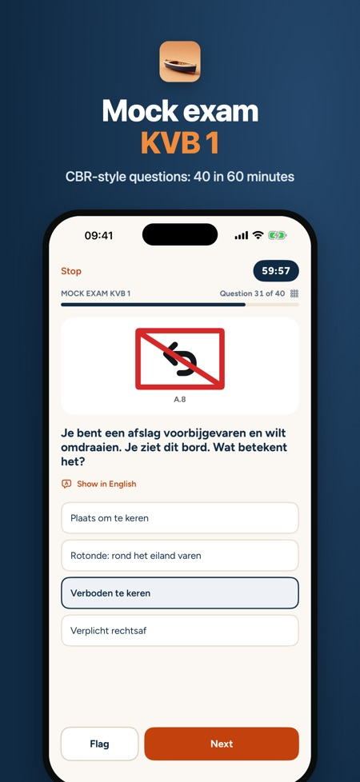
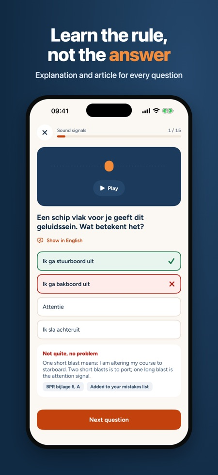
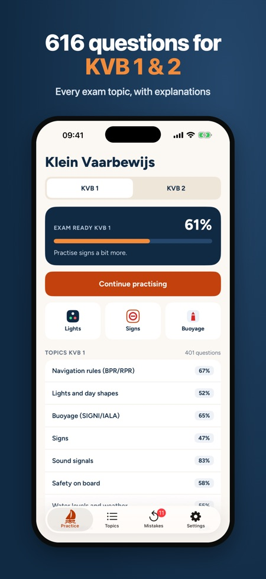

Dutch boating licence theory. Practise for KVB 1 and 2 in 2026: 616 original CBR-style questions with explanations. Timed mock exams in the exam format, light and sign cards, sound signals.



Practise for the Dutch small craft licence, Klein Vaarbewijs 1 or 2, in short rounds wherever you are. You see straight away what is right or wrong, with an explanation for every question.
The questions are in Dutch, like the exam. Every question has an English translation and every explanation is available in English.
WHAT YOU GET
• 616 original practice questions covering all KVB 1 and KVB 2 exam topics
• An explanation for every question; for rules, lights, signs and sound signals with the article of BPR, RPR or SRW
• Timed mock exams scored on points in the exam format: KVB 1 with 40 questions in 60 minutes, KVB 2 with 27 questions in 90 minutes, including open calculation questions
• Light cards: navigation lights seen from ahead, astern and the side, plus day shapes
• Signs, buoyage (SIGNI and IALA) and sound signals you can play
• Chart reading, tides and course calculation for KVB 2, with practice charts
• Mistakes list: a question only leaves it after two correct answers in a row
• Exam-ready percentage, exam date and a daily reminder
PAY ONCE
Navigation rules (BPR/RPR) and one mock exam can be practised without buying. One purchase unlocks everything for KVB 1 and KVB 2. No subscription, no account, no ads. Works offline.
GOOD TO KNOW
The questions are written for this app from the public regulations. This app is not affiliated with the CBR. Check the CBR website for the current exam requirements.